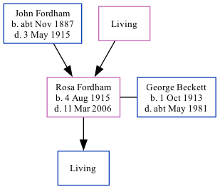

Rosa Estelle Beckett (née Fordham) 1915 - 2006 [ Home ] | [ Calendar ] | [ Surnames Index ] | [ Family History ]The daughter of John Fordham (a house boy on a farm) and Maria Rowland Rosa Fordham was born in Ramsgate, Kent, England on Aug 4, 19151,2 and. She married George Beckett (a farm hand with whom she had 1 surviving child) in Thanet, Kent, England on Apr 1, 19403 .
She died on Mar 11, 2006 in Lichfield, Staffordshire, England1 .
Parents John Henry was born c. Nov 1887Maria Elizabeth Citations England & Wales, Death Index: 1984-2005 Online publication - Provo, UT, USA: The Generations Network, Inc., 2007.Original data - General Register Office. England and Wales Civil Registration Indexes. London, England: General Register Office. © Crown copyright. Published by permission of the Cont England & Wales, FreeBMD Birth Index, 1837-1915 Online publication - Provo, UT, USA: The Generations Network, Inc., 2006.Original data - General Register Office. England and Wales Civil Registration Indexes. London, England: General Register Office. © Crown copyright. Published by permission of the Cont England & Wales, Marriage Index: 1916-2005 Online publication - Provo, UT, USA: The Generations Network, Inc., 2009.Original data - General Register Office. England and Wales Civil Registration Indexes. London, England: General Register Office. © Crown copyright. Published by permission of the Cont Family Tree Map
Generated by ged2site . Last updated on Feb 28, 2025